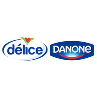

Bienvenue
Nous sommes deux étudiantes en systèmes embarqués à l'Institut Supérieur d'Informatique et de Mathématique de Monastir (ISIMM), Khayat Ghofrane et Benothmen Insaf, actuellement en stage de fin d'études (PFE) au sein de l'entreprise Délice Danone.
Dans le cadre de ce projet, nous travaillons sur l'intégration d'un protocole de communication de filière vers Profinet, afin d'améliorer la connectivité et l'efficacité des équipements industriels.
Par ailleurs, nous avons créé ce site dans le but de faciliter l'accès à l'information et de servir de support pratique pour les futurs stagiaires en automatisme au sein de la société Délice Danone.

Cahier des charges
Intitulé du projet
Modernisation de la communication automate-variateur de la conditionneuse ERCA6
Organisme d’accueil
STIAL – Délice Danone, Soliman, Tunisie
Contexte du projet
La conditionneuse ERCA6 joue un rôle clé dans la ligne de production de STIAL, en assurant l’introduction du décor sur les pots de yaourt. Actuellement, la communication entre l’automate Siemens S7-400 et le variateur SEW MDX61B utilise une liaison TOR filaire. Ce système présente plusieurs limites : câblage complexe et encombrant, paramètres moteurs figés, absence de retour d’état précis en cas de défaut, et maintenance difficile. Une modernisation est donc nécessaire pour fiabiliser, simplifier et améliorer la communication ainsi que le contrôle.
Problématique
- Communication ancienne et peu flexible entre automate et variateur via signaux TOR filaires.
- Paramètres moteurs (vitesse, position, etc.) figés et non modifiables en fonctionnement.
- Absence d’accès à l’état machine, rendant le diagnostic des défauts difficile.
Objectifs
- Remplacer la communication filaire par une communication industrielle moderne via Profinet.
- Rendre les paramètres moteurs dynamiquement configurables (vitesse, position, accélération, etc.).
- Mettre en place un suivi en temps réel des défauts et états du variateur.
- Intégrer tous les équipements dans un réseau centralisé avec supervision et diagnostic.
- Développer une application mobile pour recevoir à distance les notifications de défauts, facilitant l’intervention rapide et la continuité de la production.